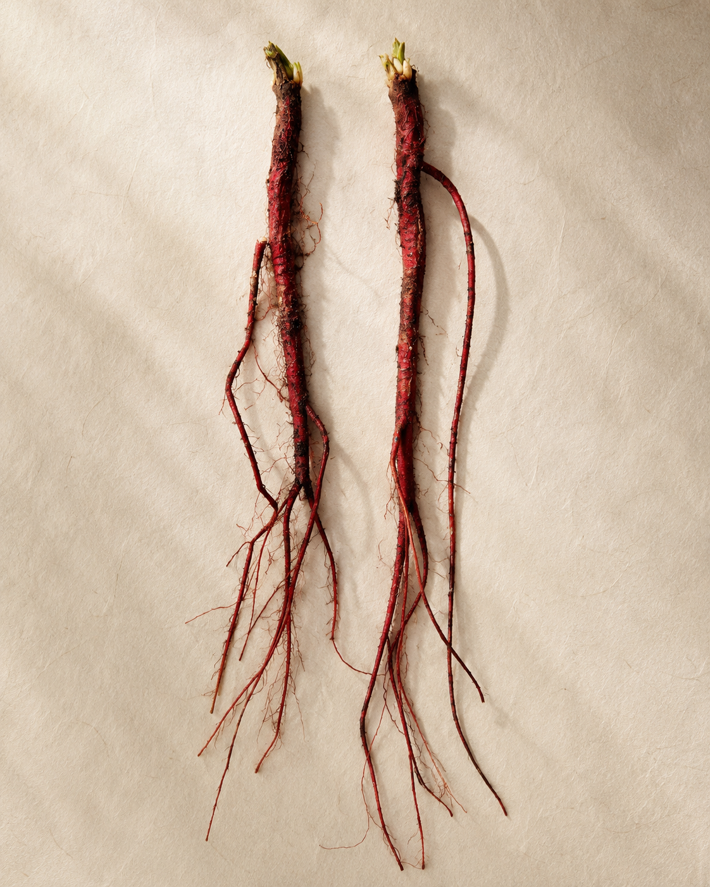

01
첫 잔
남자가 먼저 잔을 채운다.
“색이 정말 예쁘네요.”
여자의 첫 마디. 잔을 사이에 두고 짠. 한 모금에 으읏, 두 사람의 눈이 마주치고, 누가 먼저랄 것도 없이 빙그레 웃는다.
술기운이 오가면서 평소엔 빙빙 돌리던 질문이 곧장 나온다. 답도 솔직해진다. 가십도, 빈 말도 없이.
붉은빛이 잔에 남고, 잔의 붉은빛이 마음에 남는다.
이 사람, 괜찮은 사람인가?
紅酒和談
the red in the glass, stays in the heart
화담
한 번의 잔, 세 번의 마음
01
남자가 먼저 잔을 채운다.
“색이 정말 예쁘네요.”
여자의 첫 마디. 잔을 사이에 두고 짠. 한 모금에 으읏, 두 사람의 눈이 마주치고, 누가 먼저랄 것도 없이 빙그레 웃는다.
술기운이 오가면서 평소엔 빙빙 돌리던 질문이 곧장 나온다. 답도 솔직해진다. 가십도, 빈 말도 없이.
붉은빛이 잔에 남고, 잔의 붉은빛이 마음에 남는다.
이 사람, 괜찮은 사람인가?
02
세 잔째.
한옥의 작은 방. 진도한정식 한 상 위에 홍주 잔이 놓여 있다. 첫 잔의 어색함은 사라진 지 오래다.
무엇을 하며 사는지, 어떻게 자랐는지, 무얼 좋아하는지, 평소라면 천천히 꺼내야 할 이야기들이 자연스럽게 오간다. 잔을 사이에 두고 묻고, 답하고, 또 묻는다.
붉은빛이 두 사람 사이를 천천히 흐른다.
한 번 더, 만나도 좋겠다.
03
출근길 버스 안.
문득 어제가 떠오른다. 입가에 아직 붉은 한 방울이 남아 있는 듯하다.
오랜만에 만난 사람인데, 대화가 편했다.
주말에 드라이브를 가기로 했다. 이번 주 날씨가 좋다고 했던가.
주말이 기다려진다.
천 년의 시간을 건너온 잔
진도홍주는 천 년의 시간을 건너온 술이다.
고려시대 증류주의 한 갈래가 한반도 남쪽 끝 섬으로 흘러들어왔고, 진도의 온화한 기후와 비옥한 땅 위에서 지초주라는 이름으로 자랐다. 다른 어떤 술도 가지지 못한 헤리티지가 이 작은 섬에 있다.

진도홍주의 선홍색은 지초라는 약초의 뿌리에서 온다.
지초는 예로부터 산삼·삼지구엽초와 함께 3대 선약(仙藥)으로 꼽혔다. 신비의 영약이라 불렸고, 묵을수록 깊어진다고 했다.
그런데 한때 진도 산자락 어디서나 자생하던 지초가, 이제는 거의 사라졌다. 깨끗한 공기와 서늘한 그늘을 좋아하는 까다로운 약초이기 때문이다.
그래서 우리는 지초를 직접 기른다.
한 번도 농사를 지어본 적 없는 사람이, 봄에 씨를 묻고 겨울에 붉은 뿌리를 거둔다. 한 해를 그렇게 기다린다.
지초가 있어야 홍주가 있고, 홍주가 있어야 진도가 있다. 누군가는 그 자리를 지켜야 한다.
천 년의 역사에 한 사람의 백 년을 보탠다는 마음으로, 오늘도 잔에 붉은빛을 담는다.
이 잔이 누군가의 첫 만남에 놓이고, 오래된 사람과의 저녁에 놓이고, 누군가의 선물이 되어 마음을 전할 때, 천 년이 비로소 오늘에 닿는다.
홍주화담은 그 잔의 이름이다.
진도의 붉은 술, 잔에 담아 곁으로.
빚고, 내리고, 맛보는 — 진도에서의 하루.